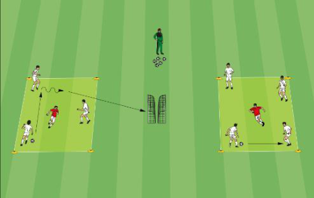
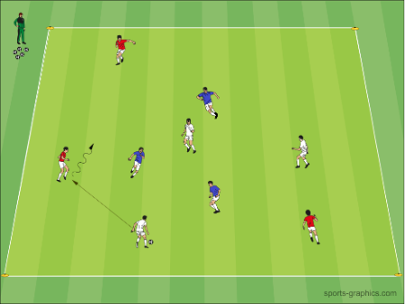
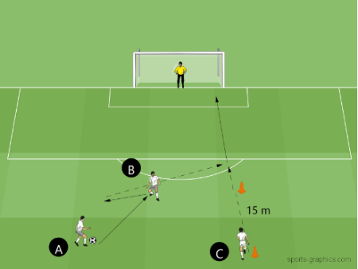

Ein Spieltag von der Besammlung bis zum Resümee, in der Reihenfolge, in der er abläuft. Gedacht zum einmaligen Durchlesen vorher und zum Nachschlagen am Spielfeldrand — darum steht jede Überlegung als Paar da: links, was zu sehen ist, rechts, was wir machen.
Diese Seite ist gegnerunabhängig. Was wir über den jeweiligen Gegner wissen — sein System, seine gefährlichen Spieler, sein Torhüter — kommt aus der Spielvorbereitung dazu. Hier steht das, was bei jedem Spiel gleich bleibt.
Die Grundhaltung in einem Satz: zuerst lesen, dann entscheiden. Ein Plan, der vor dem Anpfiff feststeht und während des Spiels nicht mehr angeschaut wird, ist kein Plan.
| Zeit | Was | Worum es geht |
|---|---|---|
| –60 Min. | Besammlung | Material, Spielerkarte, Rotationsplan — und wer heute den Beobachtungs-Zettel führt |
| –50 Min. | Kabine | Drei Punkte, Einsatzzeiten transparent, Standard-Zuteilung |
| –35 Min. | Einlaufen (30 Min.) | Fünf Blöcke nach dem SFV-Einstieg → EL-1 |
| –5 Min. | Letzte Ablesung | Drei Dinge am Gegner zählen, nicht vermuten |
| 0–20 | 1. Viertel | Lesen, kompakt stehen, nicht verlieren |
| 20–40 | 2. Viertel | Antworten auf das, was im 1. Viertel abgelesen wurde |
| 40–60 | 3. Viertel | Das Spiel holen |
| 60–80 | 4. Viertel | Frische Beine, kein Pressing, zu Ende spielen |
| danach | Resümee | Drei Fragen noch auf dem Platz beantworten |
Die Viertelpausen sind kurz (max. 3 Minuten). Was dort gesagt wird, muss in einen Satz passen — eine Sache, nicht fünf.
Drei Punkte, nicht mehr:
Einsatzzeiten transparent ansagen — wer zwei und wer drei Viertel bekommt, und warum. Kommen mehr als elf Spieler: wer aussetzt und weshalb, einzeln und vorher. Das ist die Teamregel «Respekt» in der Praxis.
Einzeln sagen, nicht in der Runde: wer zum ersten Mal beginnt (als Auszeichnung), und jedem, der auf einer neuen Position spielt, was dort sein Job ist.
Was nicht in die Kabine gehört: wie gut die Chancen stehen. Erwartung erzeugt Druck, und Druck kostet uns das erste Viertel.
Vollständiger Ablauf mit Übungen, Skizzen und Big 4: EL-1 Einlaufen Spieltag. Nicht abkürzen — wird die Zeit knapp, wird Block 2 gekürzt, nie Block 1.
| # | Block (Nummer in EL-1) | Dauer | Kern |
|---|---|---|---|
| 1 | Start-Ritual EL-1: 0 |
3' | Alle im Kreis, jedes Mal gleich: zweimal klatschen → 5 Hampelmänner → alle still, einmal tief ein und aus → gemeinsam «LOS GEHT'S!». Hier wird geholt, wer herumblödelt — nicht in der 2. Spielminute |
| 2 | Ball-Aufwärmen mit Big 4 EL-1: 1A–1C |
12' | Ballzirkulation und Rondo, nach jeder Wiederholung zwei Stabi-Übungen. Der Torhüter wärmt parallel am Tor auf — und bekommt am Ende dieses Blocks drei angesagte Schüsse aus ca. 10 m, damit der erste Ball auf sein Tor nicht der aus Block 4 ist |
| 3 | Spielform mit Punkten EL-1: 2 |
7' | Feld ca. 25 × 20 m, drei Teams in drei Farben (der Torhüter spielt im Feld mit). Zwei Teams haben zusammen den Ball gegen das dritte, wer den Ball verliert, ist das neue verteidigende Team. Punkt für beide Ballbesitz-Teams bei 8 Pässen. 3 Durchgänge à 1'30"–2', Punktestand laut mitzählen und am Ende ansagen. Damit das erste Duell des Tages nicht der Anstoss ist |
| 4 | Explosivität mit Torschuss EL-1: 3 |
6' | Doppelpass, Sprint in die Tiefe, Ball in den Lauf, Abschluss aufs echte Tor. 100 % Sprinttempo — und der Torhüter bekommt hier seine spielnahen Schüsse |
| 5 | Teamkreis & Ansprache EL-1: 4 |
2' | Standard-Zuteilung laut und namentlich · ZUSAMMEN verteidigen, BREIT angreifen · ein Kommando für alle: «JETZT!» vom ballnächsten Spieler · die drei Teamregeln |
Die Originalgrafiken der drei Blöcke mit Übungsvorlage
Block 2 · SFV-Lernbaustein «TE: Torschuss 01» · Phase 1 – Aufwärmen

Originalgrafik aus dem Lernbaustein. Wir spielen sie ohne Minitore: zuerst Ballzirkulation in drei Gruppen, dann zwei Rondos 4 gegen 1 – der Torhüter wärmt die ganze Zeit parallel am Tor auf. Genauer Ablauf in EL-1.
Block 3 · SFV-Lernbaustein «TA: Spielsituation rasch erkennen und blitzschnell entscheiden» · Phase 2 – Aufwärmen mit Technik-/Taktikfokus

Originalgrafik aus dem Lernbaustein – das ist die Vorlage für Block 3. Drei Teams in drei Farben, zwei davon zusammen in Ballbesitz; Feldgrösse und Teamgrössen wie in der Tabelle oben.
Block 4 · SFV-Lernbaustein «TE: Torschuss 01» · Phase 3 – Explosivität

Originalgrafik aus dem Lernbaustein. Hier sind die Schüsse: Doppelpass, der Rückpass ist das Startsignal, Sprint in die Tiefe, Ball in den Lauf, Abschluss aufs echte Tor – mit Torhüter im Tor.
Beim Einlaufen des Gegners hinschauen und drei Dinge notieren:
Daraus folgt der ganze Spickzettel unten. Nicht vermuten, zählen. Und in jeder Viertelpause nachzählen — Mannschaften stellen um.
Die vierte Frage fällt in der 5. Minute: wirft ihr Torhüter den Ball ab oder schlägt er lang? Daran hängt, ob wir überhaupt pressen.
| Beobachtung | Reaktion |
|---|---|
| Zwei Spitzen, die links und rechts die Seite belegen | Dreierkette bleibt zu dritt. RV und LV nehmen je einen Stürmer, der MV sichert zentral ab — er ist der freie Mann. RF und LF kommen mit zurück, sonst sind wir aussen in Unterzahl. Unser Gewinn: ihr Zentrum ist leer, der MS ist anspielbar — Ball in die Mitte und dann schnell |
| Zwei Spitzen zentral, alles läuft über einen Mittelfeldspieler | Zentrum verstärken: der MV rückt ins defensive Mittelfeld auf, der MS staffelt zurück — aus dem 1-3-3 wird gegen den Ball ein 1-2-2-2. Nur dafür ist diese Umstellung da |
| Sie haben nur einen zentralen Mittelfeldspieler, und er ist der Dreh- und Angelpunkt | Der MS teilt ihn zu — Manndeckung, ohne jeden Umbau. Die Dreierkette bleibt stehen, unsere Offensive bleibt zu dritt. Der billigste taktische Eingriff, den es gibt |
| Sie haben nur zwei Verteidiger | Unsere drei Offensiven bleiben vorne. Drei gegen zwei ist Überzahl genau dort, wo Tore entstehen. Nicht aus Vorsicht einen davon zurückziehen |
| Sie haben drei Verteidiger | Vorne kein Überhang mehr. Dann MS tiefer, über die Flügel und die Breite statt durch die Mitte |
| Nur ein Stürmer, dafür Überzahl in der Mitte | Der häufigste Fall: Zentrum verstärken, hinten genügen zwei gegen einen |
| Unklar | Erst Dreierkette. Zehn Minuten kompakt stehen kostet nichts, ein Ball in den Rücken einer Zweierkette kostet ein Tor |
| Beobachtung | Reaktion |
|---|---|
| Der Torhüter wirft ab oder spielt flach heraus | Plan A: pressen, aber nur auf Auslöser. Bester Moment: er legt den Ball auf den Boden — er darf ihn nicht mehr aufnehmen. Dazu: Rückpass zu ihm, Volley aus den Händen (verboten), jede schlechte Annahme. Einer presst, die anderen staffeln sich pyramidenförmig dahinter — nicht alle hinlaufen |
| Der Torhüter schlägt lang vom Boden ab | Plan B: nicht pressen. Die drei Offensiven bleiben an der Mittellinie, die Kette 5–10 m zurücknehmen, damit der Ball vor uns herunterkommt. Der zweite Ball ist das Spiel — der MS kippt schon beim Abstoss ab. Der Abschlag vom Boden ist erlaubt und beliebig weit: es gibt nichts zu reklamieren, nur etwas anders zu machen |
| Alles kommt über eine Seite | Der Flügel dieser Seite bleibt hinten, die Dreierkette schiebt mit. Diese Beobachtung ist die mit dem besten Verhältnis von Aufwand und Wirkung — und die, die am leichtesten untergeht |
| Ihr Aussenverteidiger rückt auf | Das ist kein Ausflug. Aufgerückte Aussenverteidiger schliessen ab. Unser Flügel auf dieser Seite geht mit, bis zum Ende |
| Sie wechseln den Torhüter | Die Pressing-Entscheidung neu stellen. Wirft der Neue ab, gilt wieder Plan A. Ein Torhüterwechsel ist der häufigste Moment, in dem ein Plan still ungültig wird |
Pressing-Prinzipien: Manual Fussball Jugendliche S. 71. Auslöser aus den D-7-Spezialregeln → R-1 D7-Regeln.
| Beobachtung | Reaktion |
|---|---|
| Einer von ihnen hat den Ball und kann schiessen — auch weit vom Tor weg | Immer der Nächste läuft an. Nicht gestörte Schüsse sind unser grösster Gegentor-Posten. Ansage: «Wer schiessen kann, wird angelaufen» |
| Ecke, Freistoss oder Flanke gegen uns | Laut und namentlich zuteilen — «ICH NEHM DEN!», nicht «einer geht hin». Vorher in der Kabine festgelegt. Kostet kein Training und keine Kraft und ist deshalb die einzige Massnahme, die immer funktioniert |
| Einer von ihnen wird immer wieder gefährlich | Zuteilen nach Position, nicht nach Rückennummer. Nummern wechseln von Spiel zu Spiel — auch bei uns |
| Wir verlieren weit vorne den Ball | Einer setzt sofort nach, der Rest fällt zurück. Nie beides halb |
| Ein 1-gegen-1 wird verloren | Der Nächste sichert ab, statt zum Ball zu gehen. Hinter dem Verteidiger steht immer jemand — sonst ist jedes verlorene Duell ein Gegentor |
| Beobachtung | Reaktion |
|---|---|
| Wir spielen statisch, jeder bleibt auf seiner Position stehen | Ansage: «Nicht stehen bleiben und warten.» Positionen tauschen, Räume öffnen. Ein Angriff entsteht nicht aus Pässen zwischen stehenden Spielern |
| Es wird eng in der Mitte | RF und LF an die Seitenlinie. Breite zieht ihr Zentrum auseinander — dasselbe Mittel, mit dem es gegen uns funktioniert |
| Wir kommen in den Strafraum, aber ohne Abschluss | Abschliessen, nicht noch ein Pass. Was fehlt, sind nicht die verwerteten Chancen, sondern die erspielten |
| Der Torhüter hat den Ball und wir stehen alle vorne | Flach aufbauen, wenn der Gegner nicht presst — aber der MV ist immer anspielbar. Kein hoher Ball ins Nichts |
| Beobachtung | Reaktion |
|---|---|
| Wir führen | Weiterspielen. Ein Vorsprung in diesem Alter ist keine Entscheidung — Serien von drei, vier Toren in wenigen Minuten gibt es in dieser Liga in beide Richtungen. Nicht zurückziehen, nicht «verwalten» |
| Wir liegen früh zurück | Nicht am Plan festhalten und nicht ärgern — zuerst die drei Ablesungen machen und auf das antworten. Zur Mannschaft: «Das Viertel ist weg, das nächste nicht. Wir machen jetzt eine Sache besser: …» — eine, nicht fünf |
| Es ist knapp und geht ins Schlussviertel | Das Schlussviertel ist das Viertel, in dem auf dieser Stufe beide Mannschaften einbrechen. Wer dann noch dran ist, gewinnt — und das entscheidet sich in der Pause davor, nicht im Coaching der 75. Minute |
Was in diesem Viertel abgelesen wird: Spitzen · Verteidigerzahl · Breite (bis zur 5. Minute) · Torhüter (5. Minute) · über welche Seite kommen sie (10. Minute).
Wenn niemand den Zettel führt: die drei Fragen laut an die Mannschaft stellen. Die Spieler auf dem Feld wissen oft besser, woher der Druck kommt.
Dazu notieren, solange es frisch ist: Anstosszeit und Resultat des 1. Viertels zusammen · Gesamttorzahl und Feldgrösse · Platz, Wetter, Spielleitung · ihr System, ihr Torhüter, ihre Standards, ihre gefährlichsten Spieler · Aufstellung pro Viertel in der Notation Goalie, RV, MV, LV, RF, MS, LF.
Chronologie und Spickzettel sind eigene Arbeitsmittel und keine J+S-Vorgabe — das Manual schreibt für diese Stufe keine Systeme vor, sondern denkt in Spielphasen (Manual Fussball Jugendliche S. 21–23). Die Pressing-Prinzipien stammen aus S. 71, die Auslöser aus den FVRZ-D-7-Spezialregeln, der Einlaufen-Ablauf aus dem SFV-Einstieg (alle drei Phasen) und dem mobilesport-Dossier ADHS («Start-Ritual»). Die drei Skizzen sind Originalgrafiken der SFV-Lernbausteine «TE: Torschuss 01» (Phase 1 und 3) und «TA: Spielsituation rasch erkennen und blitzschnell entscheiden» (Phase 2). Regelrahmen: 4 × 20 Minuten, Wechsel nur in den Viertelpausen, maximal 11 Spieler auf der Spielerkarte, jeder mindestens 2 Viertel. Fassung vom 06.11.2026. Erstellt mit Unterstützung von KI (Claude, Anthropic).